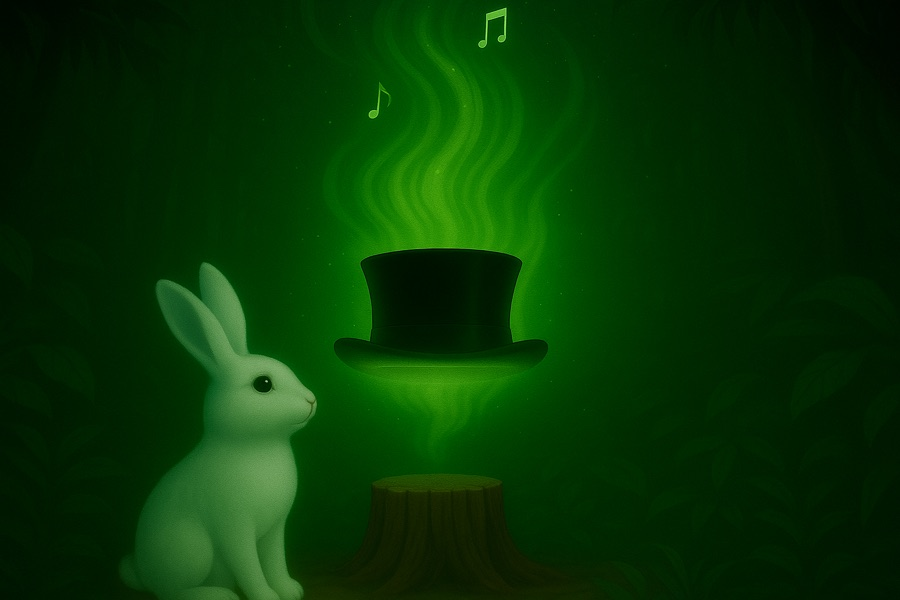

物語のはじまり 〜音の森の伝説〜
遠い未来、世界から“音”が消えてしまった時代。都市のざわめきも、鳥のさえずりも、風のハーモニーも、すべてが沈黙の中に溶けていった。人々は音を失い、心もまた、何か大切なものを忘れかけていました。
そんな時代の中に、ただひとつ“音の記憶”を宿す場所がありました。それが、音の森。誰も近づかなくなったその森の奥深くに、かすかに鼓動のようなものが響いていたのです。

ある朝、朝霧に包まれた切り株の上に、ふわりと光り輝くシルクハットが浮かんでいるのが見つかります。それはどこからともなく現れた、神秘的な存在。そして、その帽子の内側には、こう記されていました。
「音楽の力で世界を躍らせろ。君の音霊が必要だ。」
そこに現れたのは、一匹のうさぎ。名はストラビット。音を失った世界の中で、彼だけは風の残響や木々のリズムを感じようとしていました。導かれるように、彼はその帽子を手に取り、そっと頭にのせた——その瞬間、
眩い光とともに、彼の目の前に一本のバイオリンが現れたのです。触れたこともないはずのその楽器を、彼の手は自然と受け取り、指が動き、弓が走り、森に一筋の音が生まれました。
その音が、眠っていた森を目覚めさせる。鳥が枝を揺らし、風が歌い、大地が鼓動を返しはじめたのです。
レオンは確信しました。これは始まりなのだ、と。この“光り輝くシルクハット”は、音を忘れた世界に再び響きを取り戻すための、選ばれし者のしるし。まだこの森のどこかに、他にも選ばれる者たちがいる——
彼は旅に出ました。音を探し、音を持つ者たちを探すために。
そしてやがて出会ったのです。それぞれの場所で、それぞれの静寂を抱えながら、同じように“帽子”に選ばれ、音の力を目覚めさせた仲間たちを——
- ストラビット月光の弓で音を目覚めさせた、ウサギのバイオリニストにしてリーダー
- レオン咆哮を歌に変える、ライオンのボーカリスト
- エネトラ鋭さと美しさを兼ね備えたギタリスト
- ゴリーセ大地のように深い音を鳴らす、ゴリラのベーシスト
- ショパニャン静けさに詩を落とす、繊細な猫のピアニスト
- シンシン音をミックスし空間を変える、陽気なパンダのDJ
- アイニー風のようなリズムを叩き出す、俊敏なキツネのドラマー
こうして7人は集い、Animal X Orchestra（アニマル・エックス・オーケストラ）が誕生しました。
彼らの奏でる音楽は、ただ耳に届くだけのものではありません。それは世界を再起動させる“音霊（おとだま）”であり、命に再び踊りを与える“未来の交響詩”なのです。